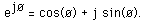
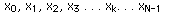

by Albert Kagarmanov, MKS-2 DESY
Lineare Transformationen, insbesondere Forier- und Laplace-Tranformationen werden verbreitet zur Problemlösung in Wissenschaft und Technik benutzt. Die Forier-Tranformation wird zur Problemlösung für Analysis linearer Systeme, Antennenstudien, Optik, Modellierung von Zufallsprozessen, Wahrscheinlichkeitstheorie, Quantenphysik und Grenzwertprobleme benutzt. Die Forier-Tranformation, ein tiefgreifendes und vielfältiges Werkzeug, wird in vielen Wissenschaftsfeldern als mathematisches oder physikalisches Werkzeug benutzt, um Probleme so zu verändern, dass sie leichter gelöst werden können.
Stetig
Für eine stetige Funktion einer Variablen f(t) ist die Fourier-Transformation F(f) definiert als:
und die inverse Transformation als:

wobei j die Wurzel aus -1 und e die Basis der natürlichen Logarithmen ist.

Discrete
Man betrachte eine komplexe Reihe x(k) mit N Elementen der Form

wobei x eine komplexe Zahl ist

Wenn jemand an weiteren Äusführungen interessiert ist, möge er die englische Version lesen.
detailed FFT description.